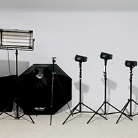
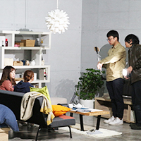

攝影棚全區空間
使用規範
1.攝影棚租賃棚內單一棚景之家具、擺設，皆可移動，使用完畢後請歸位。每個空間皆有監視器，若物品損壞者需照價賠償。搬運大型物品時請將貨品抬起，誤用拖行!造成損傷需報價賠償!
2.廠內的拍攝家具皆為販售商品，請勿傾靠或倚坐於扶手。若有毀損會已實際維修費用請求賠償。
3.進棚後若發現租賃單一棚內有任何東西損壞，請即刻告知現場工作人員，以免造成誤會損害自身權益。
4.工作完畢請回復原狀並將製造之垃圾分類整理好，請支持良好攝影環境。
5.棚內禁止飲食，如需飲食請到戶外公共區。請自行整理帶來的垃圾。
6.計費方式以預約時間開始計算至撤場結束。請勿滯留聊天，逾時視同延租另加租金，超時拍攝皆以一小時計算。
7.如自行攜帶電器誤插導致毀損，攝影棚不付賠償責任，如導致攝影棚毀損，會請廠商估價賠償(修護或換新費用)。
8.除包場外，同段時間可能會有其他攝影團隊使用(如拍攝主題需保密，請另約時間或包場)。
9.攝影棚可提供1F場地停車，最多可停滯4輛轎車，需事先告知車輛，安排場地。
10.進入白棚需脫鞋進棚。
11.每次租約總人數至多30人, 若需增員則每人酌收200元 。請同一時間進場以便確認租約時間。後續到訪的團隊請自行入場。
12預約時間結束前30分鐘會做提醒，延遲離棚20分鐘，將視為延長一小時。
器材使用規範
1.攝影棚租借以提供場地為主。協助打燈及拍攝或搬動任何物品需另行收費，如需其他專業攝影服務歡迎詢問。
2.如需搬運重物可告知工作人員，可提供使用貨梯，拍攝當日可自行將貨品搬入，提前搬入需按一般租賃攝影棚費用計價。
3.所有設備器材皆有人員可說明正確使用方法，如因使用不當造成器材、道具或場景損壞，須照價賠償(換新費用不維修)。
4.攝影棚備有飲水機、更衣室、無線網路wifi可供使用。
★可用設備：
1.冰溫熱飲水機
2.兩面落地穿衣鏡
3.六間更衣室(多位模特同時更衣)
4.大型物件下貨區與貨梯
5.直徑60CM的選轉台
6.戶外花園區
7.掛燙機、藍芽喇叭、持續燈
8.多種家具可供挑選(與家具廠商合作提供租借服務)
9.每間含有110V與220V之插孔
10.包準很冷的室內冷氣
★適合活動：
1.平面、動態畫面拍攝場景
2.家族聚會、私人包場場地
3.錄影、錄音，團班教學場地
4.音樂、藝文各類組織活動